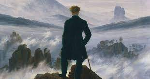

Famous concept of Ubermensch
First introduced in 1883, in his book "Also sprach Zarathustra, Nietzsche has his character Zarathustra posit the Übermensch as a goal for humanity to set for itself. The Übermensch represents a shift from otherworldly Christian values and manifests the grounded human ideal.
